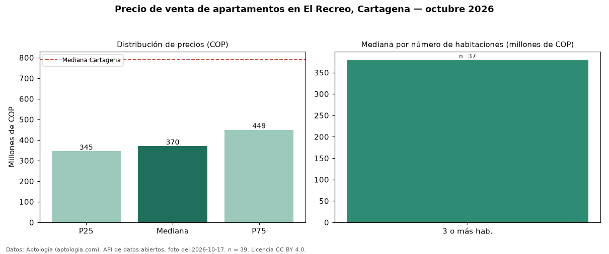

Precio de venta de apartamentos en El Recreo, Cartagena — octubre 2026
COP 370 millones es el precio mediano de apartamentos en venta en El Recreo, Cartagena (n = 39 avisos). Comparado con la mediana de la ciudad, COP 790 millones, la diferencia es de 53 % por debajo. Por mediana, es el puesto 29 de 34 barrios de Cartagena con al menos 30 avisos de apartamentos en venta: entre los más económicos. El segmento con más oferta es el de 3 o más habitaciones (37 avisos, mediana COP 380 millones). 79 % de los avisos incluye parqueadero, y su mediana (COP 400 millones) está 8 % por encima de la general. El aviso más barato pide COP 170 millones y el más caro COP 590 millones. 38 % de los anunciantes publica un teléfono de contacto. Datos: Aptología (aptologia.com), API de datos abiertos, licencia CC BY 4.0 — https://www.aptologia.com/venta/cartagena/el-recreo. Archivos: PDF de 2 páginas, CSV con las cifras y gráfica PNG.

| Avisos únicos | 39 |
|---|---|
| Percentil 25 | COP 345.000.000 |
| Mediana | COP 370.000.000 |
| Percentil 75 | COP 449.000.000 |
Fuente: avisos vigentes de portales inmobiliarios recopilados por Aptología, deduplicados (mínimo 30 avisos únicos por celda). Precios pedidos, no cerrados. Fecha: 2026-10-18.